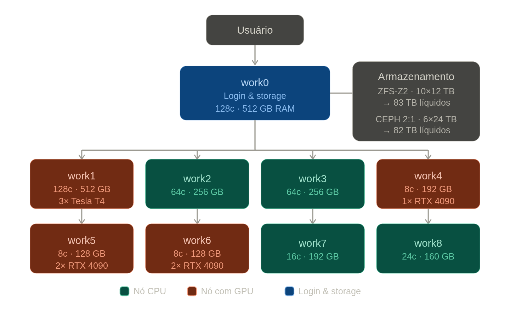
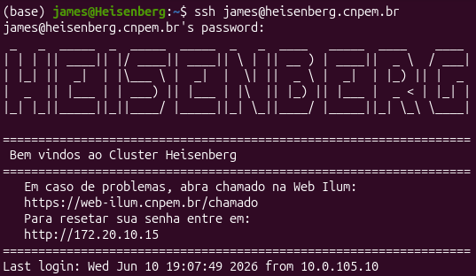
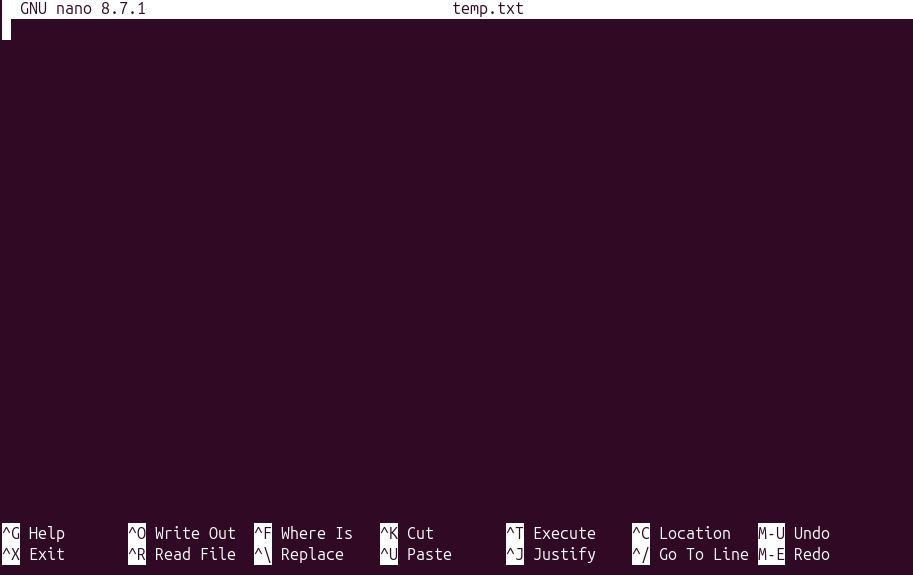
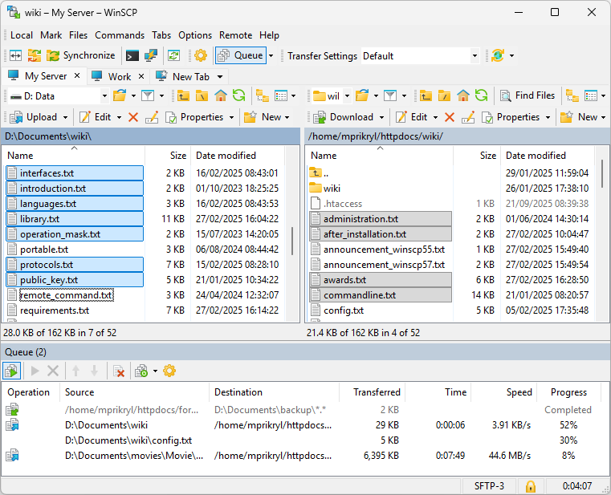

Cluster Heisenberg
Guia do Usuário
Do Terminal ao Primeiro Job
Endereço: heisenberg.cnpem.br
Chamados: https://web-ilum.cnpem.br/chamado
Reset de senha: http://172.20.10.15
CNPEM — Centro Nacional de Pesquisa em Energia e
Materiais
Ilum Escola de Ciência
Versão 1.0 — Junho de 2026
O Cluster Heisenberg é a infraestrutura de computação de alto desempenho (High-Performance Computing — HPC) disponibilizada pelo CNPEM para pesquisadores e estudantes da Ilum. Com ele, você pode executar simulações, análises de dados e treinamentos de modelos que seriam inviáveis em um computador pessoal, pois o cluster distribui o trabalho entre dezenas de processadores e placas de vídeo (GPUs) de forma coordenada.
O cluster utiliza o gerenciador de filas Slurm (Simple Linux Utility for Resource Management) e o sistema de módulos Environment Modules para carregar softwares científicos. Ambos serão explicados em detalhe neste guia.

O cluster é composto por:
Nó de login (headnode):
heisenberg.cnpem.br — o único ponto de acesso externo. É
aqui que você faz login, edita scripts e submete jobs. Não
execute simulações pesadas diretamente nele.
Nós de trabalho (worker nodes):
work0 a work8 — onde os jobs de fato rodam,
gerenciados automaticamente pelo Slurm.
A tabela abaixo resume o hardware de cada nó disponível no cluster.
| Nó | CPUs | RAM (GB) | Sockets | GPU | Filas |
|---|---|---|---|---|---|
| work0 | 128 | 503 | 2 × 64 cores | — | cpu |
| work1 | 128 | 503 | 2 × 64 cores | 3 × NVIDIA T4 | cpu, gpu |
| work2 | 64 | 251 | 2 × 32 cores | — | cpu |
| work3 | 64 | 251 | 2 × 32 cores | — | cpu |
| work4 | 16 | 125 | 1 × 16 cores | 1 × NVIDIA RTX 4090 | gpu |
| work5 | 16 | 125 | 1 × 8 cores | 2 × NVIDIA RTX 4090 | gpu |
| work6 | 16 | 125 | 1 × 8 cores | 2 × NVIDIA RTX 4090 | gpu |
| work7 | 32 | 188 | 1 × 16 cores | — | cpu |
| work8 | 48 | 157 | 2 × 12 cores | 1 × NVIDIA RTX 3060 | gpu |
O nó work7 encontra-se ocasionalmente em manutenção
(down). Consulte o estado atual com sinfo antes de planejar seus
jobs.
Para acessar o Heisenberg você precisará de:
Uma conta ativa no sistema da Ilum/CNPEM;
Um cliente SSH instalado no seu computador;
Estar conectado à rede da Ilum (presencialmente ou via VPN).
SSH (Secure Shell) é o protocolo padrão para acessar servidores remotos com segurança pelo terminal.
Abra o terminal e execute:
$ ssh seu_usuario@heisenberg.cnpem.brSubstitua seu_usuario pelo seu login institucional.
No Windows 10/11, o SSH já vem instalado. Abra o
PowerShell ou o Terminal do Windows
(tecle Win + R, digite powershell e pressione
Enter) e use o mesmo comando:
ssh seu_usuario@heisenberg.cnpem.br
Caso tenha esquecido sua senha, acesse o portal de reset pelo navegador:
O portal de reset de senha só é acessível dentro da rede da Ilum ou via VPN.
Para reportar problemas técnicos, solicitar novos softwares ou tirar dúvidas com a equipe de TI, utilize o sistema de chamados:
Esta seção é voltada para quem nunca usou um terminal antes. Se você já tem experiência com Linux, pode pular para a Seção 5.
O terminal (também chamado de shell ou linha de comando) é uma interface de texto onde você digita comandos para o computador executar. No cluster, toda interação é feita pelo terminal — não há área de trabalho gráfica.
Após o login, você verá algo como:
usuario@heisenberg:~$Isso significa: usuario = seu nome de usuário;
heisenberg = nome da máquina; ~ = você está na
sua pasta pessoal (home); $ = pronto para receber
comandos.
O Linux organiza arquivos em uma árvore de diretórios. A raiz é
/. Sua pasta pessoal fica em /home/seu_usuario
e pode ser referenciada pelo atalho ~.
$ pwd
/home/joaopwd (print
working directory) mostra o diretório atual.
$ ls
dados/ scripts/ simulacao.sh
ls -lh
total 12K
drwxr-xr-x 2 joao joao 4096 jun 1 10:00 dados
drwxr-xr-x 2 joao joao 4096 jun 1 10:01 scripts
-rw-r--r-- 1 joao joao 512 jun 3 14:22 simulacao.sh-l exibe detalhes (permissões, tamanho, data);
-h exibe tamanhos legíveis (KB, MB).
$ cd dados
pwd
/home/joao/dados
cd .. # volta um nivel acima
cd ~ # volta para a home
cd - # volta para o diretorio anterior$ mkdir meu_projeto
mkdir -p meu_projeto/resultados/graficos # cria toda a arvore$ nano meu_arquivo.txtO nano é um editor
de texto simples que funciona direto no terminal.

nano no terminal.Atalhos do nano:
Ctrl+O → salvar (O de
Output)
Ctrl+X → sair
Ctrl+W → buscar texto
$ cat arquivo.txt # exibe o arquivo inteiro
less arquivo.txt # paginado (q para sair, /termo para buscar)
head -20 arquivo.txt # primeiras 20 linhas
tail -20 arquivo.txt # ultimas 20 linhas
tail -f log.out # acompanha o arquivo em tempo real$ cp arquivo.txt copia.txt # copiar arquivo
cp -r pasta/ pasta_backup/ # copiar pasta inteira
mv arquivo.txt novo_nome.txt # renomear ou mover
mv arquivo.txt /home/joao/dados/ # mover para outra pasta
rm arquivo.txt # remover arquivo
rm -r pasta/ # remover pasta e tudo dentroO comando rm apaga
arquivos permanentemente no Linux — não existe lixeira
no terminal. Use com muito cuidado, especialmente com -r
(recursivo). Nunca execute rm -rf / ou
rm -rf * sem ter certeza absoluta do que está fazendo.
Os comandos abaixo são digitados no terminal do seu próprio
computador (PowerShell no Windows ou terminal no Linux/macOS),
não no cluster. Substitua james pelo seu
usuário.
# Enviar um arquivo para a home do cluster
scp foo.bar james@heisenberg.cnpem.br:~/
# Enviar um arquivo para uma subpasta especifica
scp foo.bar james@heisenberg.cnpem.br:~/dados/
# Enviar uma pasta inteira (-r de recursivo)
scp -r minha_pasta/ james@heisenberg.cnpem.br:~/# Baixar um arquivo para o diretorio atual
scp james@heisenberg.cnpem.br:~/foo.bar ./
# Baixar um arquivo de uma subpasta
scp james@heisenberg.cnpem.br:~/resultados/output.dat ./
# Baixar uma pasta inteira
scp -r james@heisenberg.cnpem.br:~/resultados/ ./No Windows, esses comandos funcionam exatamente da mesma forma dentro do PowerShell. Não é necessário nenhum programa adicional.
Para quem prefere uma interface gráfica de arrastar e soltar, o WinSCP é uma alternativa prática no Windows. Ele permite navegar pelas pastas do cluster e transferir arquivos sem usar o terminal.

Para um tutorial completo de instalação e uso do WinSCP com o Heisenberg, assista ao vídeo:
$ top # monitor de processos em tempo real (q para sair)
htop # versao melhorada do top (se disponivel)
ps aux | grep meu_usuario # listar seus processos
kill 12345 # encerrar processo com PID 12345$ grep "erro" log.out # busca a palavra "erro" no arquivo
grep -r "funcao" scripts/ # busca recursiva em uma pasta
find . -name "*.py" # encontra arquivos .py a partir do diretorio atual
wc -l arquivo.txt # conta linhas de um arquivo$ ls -lh > lista.txt # redireciona saida para arquivo (sobrescreve)
ls -lh >> lista.txt # redireciona e acrescenta ao arquivo
cat log.out | grep "ERRO" # filtra linhas com "ERRO" do log
sort numeros.txt | uniq # ordena e remove duplicatasTab — completa automaticamente nomes de arquivos e comandos.
Seta ↑/↓ — navega pelo histórico de comandos.
PageUp / PageDown — busca no histórico pelo que
já foi digitado. Por exemplo, se você digitar srun e
pressionar PageUp, o terminal mostrará o último comando
que começava com srun.
Ctrl+C — cancela o comando em execução.
Ctrl+L — limpa a tela.
Ctrl+A / Ctrl+E — vai para o início/fim da linha.
history — exibe
os últimos comandos digitados.
man ls — exibe
o manual de qualquer comando (q para sair).
Normalmente, quando você executa um comando no terminal, ele ocupa o prompt até terminar. Para liberar o terminal enquanto o programa ainda roda, use o & ao final do comando:
$ programa &
[1] 18423O número entre colchetes é o número do job e o seguinte é o PID do processo. O programa continua rodando em segundo plano enquanto você usa o terminal normalmente.
O problema do & sozinho é que, se você fechar a
sessão SSH, o programa é encerrado junto. Para evitar isso, use nohup (no hang up),
que desconecta o processo da sessão:
$ nohup programa > saida.out 2> erros.err &
[1] 18424O > saida.out redireciona a saída padrão e
2> erros.err redireciona os erros, pois com nohup o terminal não está
mais disponível para exibir nada. O programa continuará rodando mesmo
após você fechar o SSH.
Para gerenciar processos em segundo plano:
$ jobs # lista os processos em background desta sessao
fg 1 # traz o job [1] de volta para o foreground
kill 18424 # encerra o processo pelo PIDO nohup serve para
tarefas leves e rápidas, como scripts de pré ou pós-processamento.
Não rode simulações pesadas diretamente no nó de login,
independentemente de usar nohup ou não. Para isso,
utilize sempre o Slurm.
O sistema de Environment Modules permite carregar e
descarregar softwares científicos de forma isolada, sem conflitos entre
versões. Quando você carrega um módulo, o sistema ajusta automaticamente
variáveis como PATH, LD_LIBRARY_PATH e outras
necessárias para o software funcionar.
$ module avail # lista todos os modulos disponiveis
module avail gromacs # filtra por nome
module load gromacs/2026.0 # carrega o modulo
module list # mostra modulos carregados
module unload gromacs/2026.0 # descarrega o modulo
module purge # descarrega todos os modulos
module show gromacs/2026.0 # exibe o que o modulo configura
module help # ajudaapps)| Módulo | Versão | Descrição |
|---|---|---|
amber |
2024 | Simulação de dinâmica molecular (biomoléculas) |
gromacs |
2026.0 | Dinâmica molecular de alta performance |
ORCA |
6.1.1 | Química quântica ab initio / DFT |
quantum-espresso |
7.5 | DFT para sólidos e superfícies |
quantum-espresso |
7.5-aocl | Idem, otimizado com AOCL |
vasp |
6.2.0 | Simulação ab initio de materiais |
vasp |
6.2.0-aocl | Idem, otimizado com AOCL |
libraries)| Módulo | Versão | Descrição |
|---|---|---|
cuda |
12.4, 13.1 | NVIDIA CUDA Toolkit (programação GPU) |
aocl |
5.3.0 / 5.3.0-mt / 5.3.0-st | AMD Optimizing CPU Libraries |
elpa |
2024.05.001 | Eigenvalue SoLvers para HPC |
hwloc |
2.12.2 | Topologia de hardware |
intel/compiler |
2025.3.0 | Intel oneAPI C/C++/Fortran |
intel/compiler-intel-llvm |
2025.3.0 | Intel LLVM compiler |
intel/mkl |
2025.3 | Intel Math Kernel Library |
intel/mpi |
2021.17 | Intel MPI |
intel/tbb |
2022.3 | Intel Threading Building Blocks |
intel/dnnl |
3.9.1 | Deep Neural Network Library |
intel/debugger |
2025.3.0 | Intel Debugger |
openmpi |
4.1.8, 5.0.9 | Open MPI (comunicação entre processos) |
pmix |
5.0.9 | Process Management Interface |
scalapack |
2.2.0-ompi509 | ScaLAPACK (álgebra linear paralela) |
$ module load gromacs/2026.0
gmx --versionPara garantir que o ambiente correto seja carregado toda vez que você
fizer login, adicione o comando module load ao arquivo
~/.bashrc:
$ nano ~/.bashrc
# Adicione ao final:
module load gromacs/2026.0Miniconda é um instalador minimalista do gerenciador de pacotes conda. Ele permite criar ambientes virtuais isolados, onde cada projeto pode ter sua própria versão do Python e suas próprias bibliotecas, sem interferir no sistema ou em outros projetos.
O Miniconda é instalado na sua área pessoal
(~/), sem necessidade de permissão de administrador. Cada
usuário instala e gerencia seu próprio ambiente.
Passo 1 — Baixar o instalador:
$ wget https://repo.anaconda.com/miniconda/Miniconda3-latest-Linux-x86_64.shPasso 2 — Executar o instalador:
$ bash Miniconda3-latest-Linux-x86_64.shO instalador fará algumas perguntas:
Do you accept the license terms? → Digite yes e
pressione Enter.
Confirm install location → Pressione Enter
para aceitar o padrão (~/miniconda3).
Do you wish the installer to initialize
Miniconda3? →
Digite yes e pressione Enter. Isso configura o
conda automaticamente no seu shell.
Passo 3 — Recarregar o shell:
$ source ~/.bashrcApós isso, o prompt mostrará (base) antes do seu nome de
usuário, indicando que o conda está ativo.
Passo 4 — Verificar a instalação:
$ conda --version
conda 24.x.xilumpyCom o conda instalado, crie um ambiente dedicado com Python 3.11:
$ conda create -n ilumpy python=3.11O conda listará os pacotes que serão instalados e pedirá confirmação.
Digite y e pressione Enter.
Ative o ambiente:
$ conda activate ilumpyO prompt mudará para (ilumpy), confirmando que o
ambiente está ativo:
(ilumpy) usuario@heisenberg:~$Verifique a versão do Python:
$ python --version
Python 3.11.xCom o ambiente ilumpy ativo, instale as bibliotecas mais
utilizadas em Python científico com um único comando:
$ pip install numpy scipy matplotlib pandas seaborn scikit-learn \
jupyter ipython sympy tqdm h5py pyarrow statsmodels \
networkx pillow MDAnalysis aseA tabela abaixo descreve o propósito de cada biblioteca:
| Biblioteca | Finalidade |
|---|---|
numpy |
Arrays numéricos e álgebra linear |
scipy |
Algoritmos científicos (integração, otimização, estatística) |
matplotlib |
Geração de gráficos e visualizações |
pandas |
Manipulação de dados tabulares (DataFrames) |
seaborn |
Gráficos estatísticos de alta qualidade |
scikit-learn |
Aprendizado de máquina clássico |
jupyter |
Notebooks interativos (Jupyter Notebook / Lab) |
ipython |
Console Python interativo aprimorado |
sympy |
Matemática simbólica |
tqdm |
Barras de progresso em loops |
h5py |
Leitura/escrita de arquivos HDF5 |
pyarrow |
Leitura/escrita de arquivos Parquet e Arrow |
statsmodels |
Modelos estatísticos e econométricos |
networkx |
Análise de grafos e redes |
pillow |
Processamento de imagens |
MDAnalysis |
Análise de trajetórias de dinâmica molecular |
ase |
Atomic Simulation Environment (materiais e moléculas) |
Para não precisar digitar conda activate ilumpy a cada
login, adicione a ativação ao arquivo ~/.bashrc:
$ nano ~/.bashrcAdicione a linha abaixo ao final do arquivo:
conda activate ilumpySalve com Ctrl+O e saia com Ctrl+X. Na
próxima vez que fizer login, o ambiente ilumpy já estará
ativo.
$ conda activate ilumpy # ativa o ambiente
conda deactivate # desativa (volta para base)
conda env list # lista todos os ambientes
conda list # lista pacotes do ambiente ativo
pip list # idem, para pacotes instalados via pip
pip install nome_pacote # instala novo pacote
pip show numpy # informacoes sobre um pacoteSempre ative o ambiente correto antes de submeter um
job que rode Python. No script .sh, inclua conda activate ilumpy logo
após carregar os módulos necessários. Veja os exemplos na Seção 7.5.
O Slurm é o software que gerencia e distribui os recursos do cluster entre os usuários. Você não executa seus programas diretamente; em vez disso, escreve um script de job que descreve os recursos necessários (CPUs, memória, tempo, GPUs) e o submete à fila. O Slurm decide quando e em qual nó o job irá rodar.
| Fila | Default | Nós | CPUs Totais | Obs. |
|---|---|---|---|---|
cpu |
Sim | work0–3, work7 | 416 | Apenas CPU |
gpu |
Não | work1, work4–6, work8 | 224 | CPU + GPU |
A fila cpu é a padrão. Se seu job precisar de GPU,
especifique explicitamente –partition=gpu e
–gres=gpu:1 no script.
| Comando | Função |
|---|---|
sinfo |
Ver estado das filas e nós |
squeue |
Ver jobs na fila |
sbatch script.sh |
Submeter um job (modo batch) |
srun |
Executar interativamente |
scancel JOBID |
Cancelar um job |
sacct |
Ver histórico de jobs |
scontrol show job JOBID |
Detalhes de um job específico |
$ sinfo
PARTITION AVAIL TIMELIMIT NODES STATE NODELIST
cpu* up infinite 2 mix work[0-1]
cpu* up infinite 2 alloc work[2-3]
gpu up infinite 3 mix work[1,4-5]
gpu up infinite 2 idle work[6,8]Os estados dos nós significam:
idle — nó livre, pronto para receber jobs;
mix — parcialmente ocupado (alguns CPUs
livres);
alloc — totalmente ocupado;
down — nó fora de serviço.
$ squeue
JOBID USER NAME PARTITION STATE TIME NODES
9426 joao simulacao.sh cpu RUNNING 40:13 1
9427 maria analise.sh gpu PENDING 0:00 1
squeue -u meu_usuario # apenas seus jobsUm script de job é um arquivo de texto com extensão .sh
contendo:
Diretivas Slurm (iniciadas com #SBATCH);
Comandos para carregar módulos;
O comando do seu programa.
#SBATCH| Parâmetro | Descrição |
|---|---|
–job-name=nome |
Nome do job (aparece no squeue) |
–partition=cpu |
Fila a usar (cpu ou
gpu) |
–nodes=1 |
Número de nós |
–ntasks=1 |
Número de tarefas MPI |
–cpus-per-task=8 |
CPUs por tarefa (threads OpenMP) |
–mem=16G |
Memória total por nó |
–time=12:00:00 |
Tempo máximo (HH:MM:SS) |
–gres=gpu:1 |
Solicitar 1 GPU |
–output=saida.out |
Arquivo de saída padrão |
–error=erros.err |
Arquivo de erros |
–mail-type=END,FAIL |
Notificação por e-mail |
–mail-user=email@ilum.br |
E-mail para notificações |
#!/bin/bash
#SBATCH --job-name=meu_primeiro_job
#SBATCH --partition=cpu
#SBATCH --nodes=1
#SBATCH --ntasks=1
#SBATCH --cpus-per-task=4
#SBATCH --mem=8G
#SBATCH --time=02:00:00
#SBATCH --output=saida_%j.out
#SBATCH --error=erros_%j.err
# Carregar modulos necessarios
module load intel/compiler/2025.3.0
# Executar o programa
echo "Job iniciado: $(date)"
./meu_programa input.dat
echo "Job concluido: $(date)"O %j no nome do arquivo será substituído automaticamente
pelo número do job (JOBID), evitando sobrescrever saídas de execuções
anteriores.
#!/bin/bash
#SBATCH --job-name=simulacao_mpi
#SBATCH --partition=cpu
#SBATCH --nodes=2
#SBATCH --ntasks=16
#SBATCH --cpus-per-task=8
#SBATCH --mem=64G
#SBATCH --time=24:00:00
#SBATCH --output=mpi_%j.out
#SBATCH --error=mpi_%j.err
module load openmpi/5.0.9
module load intel/mkl/2025.3
srun ./programa_mpi input.dat#!/bin/bash
#SBATCH --job-name=treinamento_gpu
#SBATCH --partition=gpu
#SBATCH --nodes=1
#SBATCH --ntasks=1
#SBATCH --cpus-per-task=8
#SBATCH --gres=gpu:1
#SBATCH --mem=32G
#SBATCH --time=08:00:00
#SBATCH --output=gpu_%j.out
#SBATCH --error=gpu_%j.err
module load cuda/12.4
echo "GPU disponivel:"
nvidia-smi
python treinar_modelo.py --epochs 100#!/bin/bash
#SBATCH --job-name=gromacs_md
#SBATCH --partition=cpu
#SBATCH --nodes=1
#SBATCH --ntasks=1
#SBATCH --cpus-per-task=32
#SBATCH --mem=64G
#SBATCH --time=48:00:00
#SBATCH --output=gromacs_%j.out
#SBATCH --error=gromacs_%j.err
#SBATCH --mail-type=END,FAIL
#SBATCH --mail-user=meu@email.com.br
module load gromacs/2026.0
export OMP_NUM_THREADS=$SLURM_CPUS_PER_TASK
# Etapa de equilibracao
gmx mdrun -v -deffnm equilibracao -ntmpi 1 \
-ntomp $OMP_NUM_THREADS
# Producao
gmx mdrun -v -deffnm producao -ntmpi 1 \
-ntomp $OMP_NUM_THREADS#!/bin/bash
#SBATCH --job-name=vasp_dft
#SBATCH --partition=cpu
#SBATCH --nodes=1
#SBATCH --ntasks=32
#SBATCH --mem=128G
#SBATCH --time=72:00:00
#SBATCH --output=vasp_%j.out
#SBATCH --error=vasp_%j.err
module load vasp/6.2.0
mpirun -np $SLURM_NTASKS vasp_stdPython é serial por padrão. O interpretador CPython possui uma trava interna chamada GIL (Global Interpreter Lock) que impede a execução simultânea de múltiplos threads Python no mesmo processo. Isso significa que, na maior parte dos casos, um script Python utiliza apenas 1 CPU por vez, independentemente de quantas CPUs você reserve no Slurm.
O comportamento muda quando o script usa bibliotecas que realizam processamento paralelo internamente, como:
NumPy / SciPy / scikit-learn — operações vetorizadas podem usar múltiplos núcleos via BLAS/OpenBLAS em background;
multiprocessing / joblib / concurrent.futures — paralelismo explícito usando múltiplos processos;
PyTorch / TensorFlow (com GPU)
— treinamento em GPU requer a fila gpu e
–gres=gpu:1.
Se o seu script não usa nenhuma dessas estratégias, solicite apenas 1 CPU e não desperdice recursos do cluster.
Use este modelo para scripts que não utilizam
paralelismo explícito. A flag -u no comando Python desativa
o buffer de saída, garantindo que as mensagens apareçam no arquivo de
saída em tempo real (sem atraso).
#!/bin/bash
#SBATCH --job-name=python_serial
#SBATCH --partition=cpu
#SBATCH --nodes=1
#SBATCH --ntasks=1
#SBATCH --cpus-per-task=1
#SBATCH --mem=8G
#SBATCH --time=04:00:00
#SBATCH --output=python_%j.out
#SBATCH --error=python_%j.err
# Ativa o ambiente Python com as bibliotecas instaladas
conda activate ilumpy
echo "Inicio: $(date)"
echo "No: $(hostname)"
# -u: saida sem buffer (aparece em tempo real no arquivo .out)
python -u script.py > script.out
echo "Fim: $(date)"O redirecionamento > script.out grava a saída do
print do Python em script.out, enquanto erros e
exceções vão para o arquivo .err definido no
#SBATCH. Assim você tem os resultados e os erros separados,
facilitando a depuração.
Use este modelo quando o script utiliza múltiplos processos ou
threads para aproveitar mais de um núcleo — por exemplo com
multiprocessing, joblib ou operações pesadas
de NumPy/SciPy que usam BLAS em paralelo.
#!/bin/bash
#SBATCH --job-name=python_paralelo
#SBATCH --partition=cpu
#SBATCH --nodes=1
#SBATCH --ntasks=1
#SBATCH --cpus-per-task=16
#SBATCH --mem=32G
#SBATCH --time=08:00:00
#SBATCH --output=python_%j.out
#SBATCH --error=python_%j.err
conda activate ilumpy
# Informa ao script quantas CPUs foram alocadas pelo Slurm
export N_CPUS=$SLURM_CPUS_PER_TASK
echo "Inicio: $(date)"
echo "No: $(hostname)"
echo "CPUs disponiveis: $N_CPUS"
python -u script.py > script.out
echo "Fim: $(date)"No script Python, leia a variável de ambiente para saber quantos núcleos usar:
import os
from joblib import Parallel, delayed
n_cpus = int(os.environ.get("N_CPUS", 1))
print(f"Usando {n_cpus} CPUs")
# Exemplo com joblib: executa 'minha_funcao' em paralelo
resultados = Parallel(n_jobs=n_cpus)(
delayed(minha_funcao)(i) for i in range(100)
)Solicite apenas o número de CPUs que seu código
realmente vai usar. Alocar 16 CPUs para um script
serial desperdiça recursos e atrasa outros usuários na fila. Em caso de
dúvida, comece com 1 CPU e aumente conforme necessário após verificar
com sacct.
# Submeter o job
sbatch meu_script.sh
Submitted batch job 9430
# Verificar se esta na fila
squeue -u meu_usuario
JOBID USER NAME STATE TIME
9430 joao meu_primeiro_job PENDING 0:00
# Acompanhar a saida em tempo real
tail -f saida_9430.out
# Cancelar o job
scancel 9430Para testar comandos, depurar scripts ou usar programas interativos, solicite uma sessão interativa em vez de submeter um job:
$ srun --partition=cpu --nodes=1 --ntasks=4 --mem=8G \
--time=01:00:00 --pty bash
# Com GPU:
srun --partition=gpu --gres=gpu:1 --ntasks=4 \
--mem=16G --time=02:00:00 --pty bashSessões interativas também consomem recursos do cluster. Encerre-as
com exit assim que
terminar o trabalho.
Dentro do script de job, o Slurm disponibiliza variáveis úteis:
| Variável | Conteúdo |
|---|---|
$SLURM_JOB_ID |
ID do job |
$SLURM_JOB_NAME |
Nome do job |
$SLURM_NTASKS |
Número total de tarefas |
$SLURM_CPUS_PER_TASK |
CPUs por tarefa |
$SLURM_MEM_PER_NODE |
Memória por nó (MB) |
$SLURM_NODELIST |
Lista de nós alocados |
$SLURM_SUBMIT_DIR |
Diretório de onde sbatch foi chamado |
Mantenha sua área de trabalho organizada. Uma estrutura sugerida:
~/
|-- projetos/
| |-- simulacao_proteina/
| | |-- input/
| | |-- output/
| | |-- scripts/
| | `-- logs/
| `-- calculo_dft/
| |-- ...
`-- scripts_uteis/Comece com jobs pequenos para calibrar o tempo de execução.
Não solicite mais memória ou CPUs do que seu programa realmente usa.
Monitore o uso real com sstat ou sacct após o job
terminar.
$ sacct -j 9430 --format=JobID,Elapsed,CPUTime,MaxRSS,StateCada estudante pode utilizar até 16 CPUs simultâneas no cluster. Casos excepcionais que demandem mais recursos podem ser avaliados pela equipe de TI mediante abertura de chamado em https://web-ilum.cnpem.br/chamado.
Nunca execute jobs pesados no nó de login.
Estime o tempo necessário e coloque –time realista
(nem muito apertado, nem exagerado).
Cancele jobs com scancel se perceber que não
precisará mais deles.
Remova arquivos temporários e de saída desnecessários regularmente.
Em caso de dúvidas técnicas ou problemas, abra um chamado em https://web-ilum.cnpem.br/chamado.
| Comando | O que faz |
|---|---|
pwd |
Mostra o diretório atual |
ls -lh |
Lista arquivos com detalhes |
cd pasta/ |
Entra na pasta |
cd .. |
Volta um nível |
mkdir nome |
Cria diretório |
cp a b |
Copia arquivo a para b |
mv a b |
Move/renomeia a para b |
rm arquivo |
Remove arquivo |
nano arquivo |
Edita arquivo |
cat arquivo |
Exibe arquivo |
less arquivo |
Exibe com paginação |
grep "texto" arq |
Busca texto no arquivo |
scp arq user@host:dir/ |
Envia arquivo via SSH |
Ctrl+C |
Cancela comando atual |
Tab |
Autocompleta |
man comando |
Manual do comando |
| Comando | O que faz |
|---|---|
sinfo |
Estado das filas e nós |
squeue |
Jobs na fila |
squeue -u usuario |
Seus jobs |
sbatch script.sh |
Submeter job |
scancel JOBID |
Cancelar job |
scontrol show job JOBID |
Detalhes do job |
sacct -j JOBID |
Histórico e uso de recursos |
srun –pty bash |
Sessão interativa |
| Comando | O que faz |
|---|---|
module avail |
Lista módulos disponíveis |
module load nome/versao |
Carrega módulo |
module list |
Módulos carregados |
module unload nome |
Descarrega módulo |
module purge |
Descarrega todos |
module show nome |
Mostra o que o módulo altera |
| Comando | O que faz |
|---|---|
conda activate ilumpy |
Ativa o ambiente ilumpy |
conda deactivate |
Desativa o ambiente atual |
conda env list |
Lista todos os ambientes |
conda list |
Lista pacotes do ambiente ativo |
pip install pacote |
Instala pacote no ambiente ativo |
pip list |
Lista pacotes instalados via pip |
pip show pacote |
Informações sobre um pacote |
python -u script.py |
Executa Python sem buffer de saída |
python -u script.py > out |
Redireciona saída para arquivo |
https://web-ilum.cnpem.br/chamado
Use para relatar problemas técnicos, solicitar instalação de software,
pedir aumento de cota ou qualquer dificuldade com o cluster.
http://172.20.10.15
Acesse dentro da rede Ilum ou via VPN para redefinir sua senha.
heisenberg.cnpem.br
Ao abrir um chamado, inclua sempre:
Seu nome de usuário;
O JOBID do job com problema (se aplicável);
A mensagem de erro completa;
O conteúdo do arquivo .err gerado pelo job.
Conjunto de computadores interconectados que trabalham como uma única máquina.
Processador central; realiza cálculos de propósito geral.
Espaço isolado com versão própria do Python e bibliotecas, sem interferir no sistema ou em outros projetos.
Gerenciador de pacotes e ambientes virtuais; base do Miniconda e Anaconda.
Trava do CPython que impede execução simultânea de múltiplos threads Python; torna scripts comuns essencialmente seriais.
Processador gráfico; realiza cálculos paralelos massivos (ML, simulações GPU).
Computação de alto desempenho.
Distribuição minimalista do conda; permite instalar o gerenciador de pacotes Python sem uma distribuição completa como o Anaconda.
Tarefa submetida ao Slurm para execução nos nós de trabalho.
Padrão para comunicação entre processos em múltiplos nós.
Mecanismo para carregar/descarregar softwares e suas dependências dinamicamente.
Cada computador individual dentro do cluster.
Ponto de acesso ao cluster; não deve ser usado para cálculos pesados.
API para paralelismo de memória compartilhada (multithreading).
Fila de jobs com regras específicas de acesso e recursos.
Política que limita o uso de recursos por usuário ou grupo.
Protocolo criptografado para acesso remoto a servidores.
Sistema de gerenciamento de recursos e filas de jobs usado no Heisenberg.
Obtive minha conta na Ilum/CNPEM.
Abri o PowerShell (Windows) ou o terminal (Linux/macOS).
Me conectei ao cluster:
ssh usuario@heisenberg.cnpem.br.
Explorei minha pasta home com ls e pwd.
Listei os módulos com module avail.
Instalei o Miniconda na minha home.
Criei o ambiente ilumpy com Python 3.11.
Instalei as bibliotecas científicas com pip install.
Verifiquei as filas com sinfo.
Escrevi e submeti meu primeiro job com sbatch.
Acompanhei o job com squeue e tail -f saida.out.